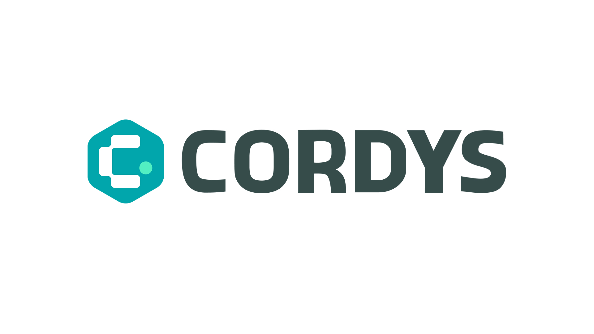
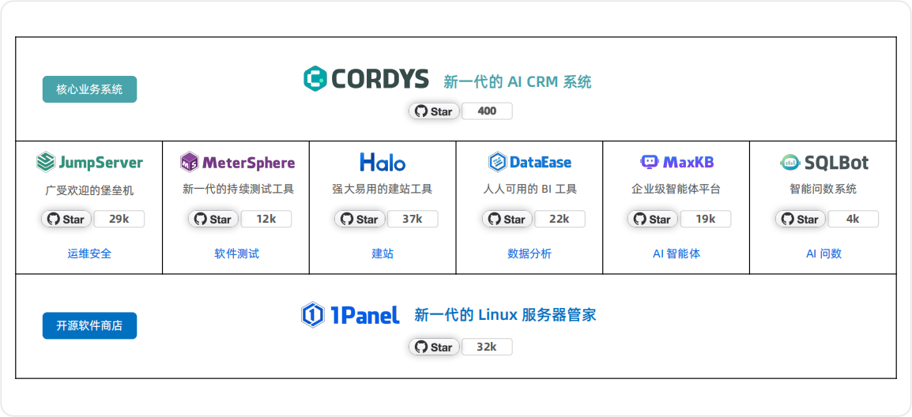
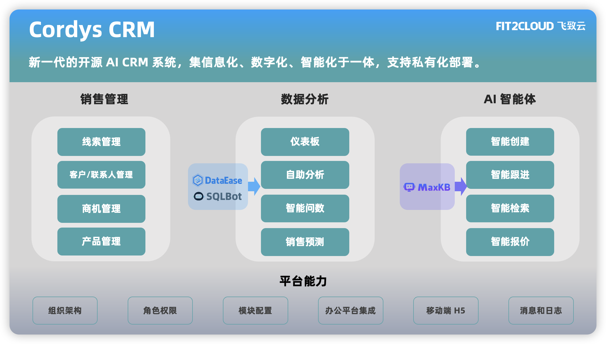
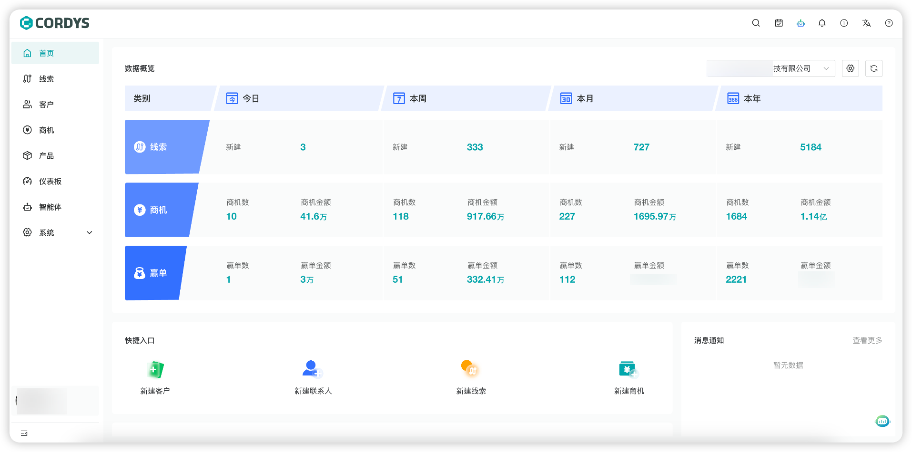
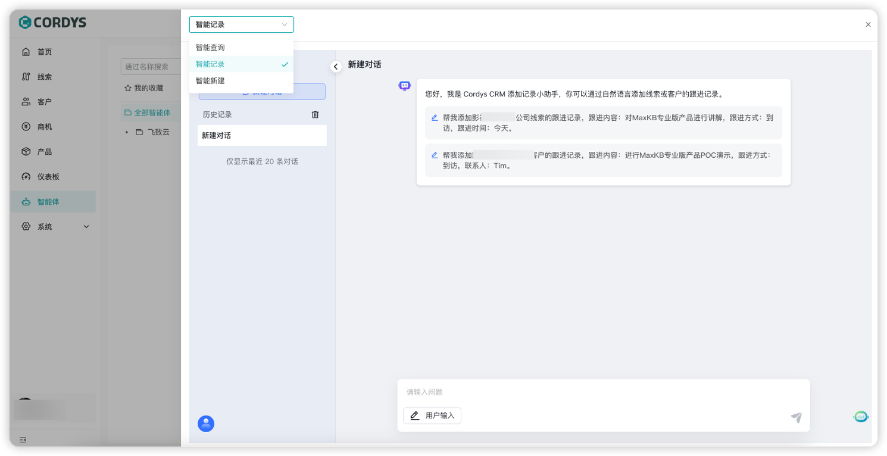
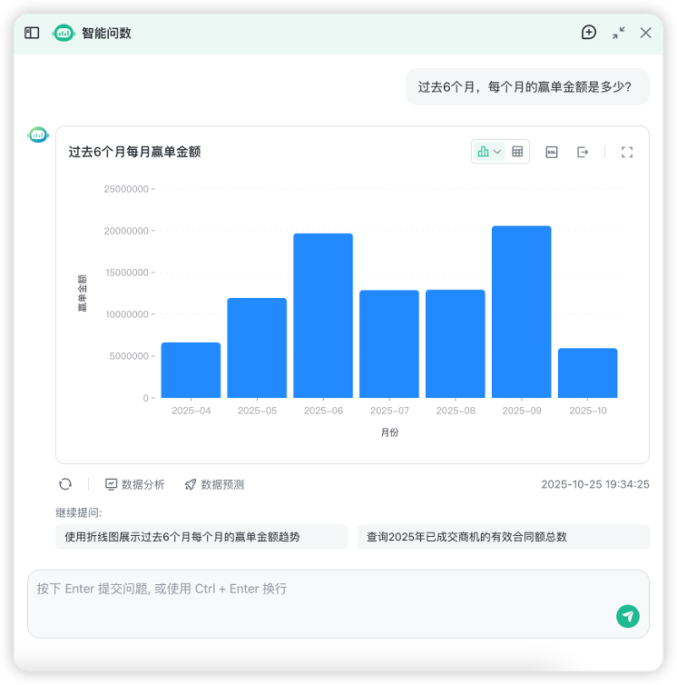
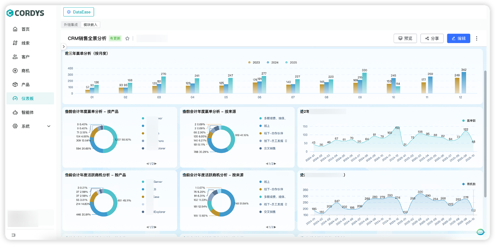

2025年11月6日，中国领先的开源软件公司飞致云宣布，其旗下新一代的开源AI CRM系统Cordys CRM正式代码开源。
Cordys CRM（github.com/1Panel-dev/CordysCRM）是新一代的开源AI CRM系统，是集信息化、数字化、智能化于一体的客户关系管理系统。Cordys（/ˈkɔːrdɪs/）一词由“Cord”（连接之绳）与“System”（系统）融合而成，寓意为“关系的纽带系统”，它诠释了CRM的本质：连接客户，缔造长期价值。

CRM（Customer Relationship Management，客户关系管理）是企业的核心业务系统，也是企业级软件的最大品类之一。在AI时代，CRM更是AI应用落地的关键场景，AI技术已经成为驱动CRM系统进化的关键力量。
与此同时，开源成为AI时代软件产品发展的必选项。在企业级开源软件领域，飞致云拥有超过十年的软件研发与市场运营积累。Cordys CRM基于飞致云长期的开源软件设计经验与思考打造，与飞致云旗下多款开源产品进行深度集成与协同，致力为企业用户提供具有时代特征、且能够持续交付业务价值的AI CRM系统。

▲图1 飞致云开源产品组合作为一款在AI时代孕育并诞生的开源CRM系统，Cordys CRM为用户提供现代化的产品使用体验，支持私有化部署，能够满足企业用户业务数据与应用安全可控的实际需求。
销售管理方面，Cordys CRM能够实现从线索到回款（L2C）的全流程精细化管理，覆盖线索获取、智能分配、客户与联系人管理、商机跟进、合同签约及回款执行等环节，帮助企业构建端到端的销售运营闭环。
与传统CRM系统有所区别的是，Cordys CRM自诞生起就融入了AI（人工智能）和BI（商业智能）的技术能力。在AI能力对接方面，Cordys CRM对外开放MCP Server，能够有效整合MaxKB开源企业级智能体平台（github.com/1Panel-dev/MaxKB）强大的智能体开发能力，帮助企业用户快速构建各类销售智能体；在BI能力对接方面，Cordys CRM可以无缝整合DataEase开源BI工具（github.com/dataease/dataease/）和SQLBot开源智能问数系统（github.com/dataease/SQLBot），实现销售数据的可视化呈现、自助分析，以及基于自然语言的智能查询与归因分析。

▲图2 Cordys CRM产品概览

▲图3 Cordys CRM主页面

▲图4 基于MaxKB实现的各类销售智能体

▲图5 基于SQLBot实现AI对话式分析

▲图6 基于DataEase实现数据可视化分析Cordys CRM于2025年8月27日启动公测，上线仅25天，全网累计下载量即突破10万次，是飞致云历史上最快速突破10万次下载量的产品。目前，Cordys CRM已在飞致云内部成功部署并稳定运行，正式替代使用长达七年的Salesforce CRM，全面支撑公司核心业务运转。
Cordys CRM正式开源后，我们将持续收集社区反馈，坚持按月迭代，不断向用户交付切实的业务价值。